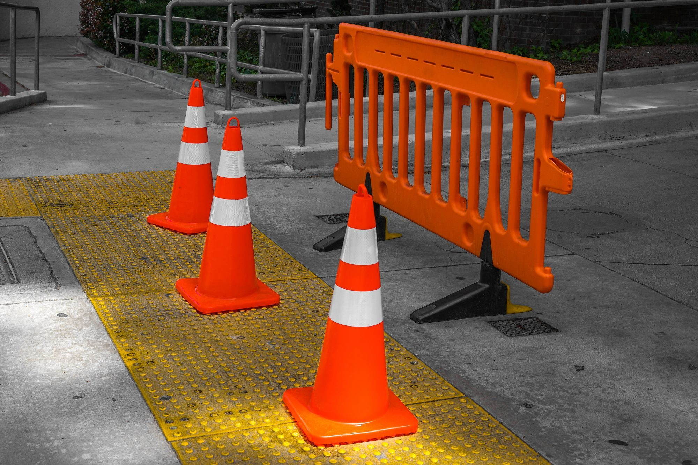

What Measure 12 does
A plain-language guide to what it builds, what it costs and who checks the work.
Try one corner
Switch each fix on, then send a school bus through. The numbers are example data.
Crossing distance
Typical speed
Relative risk index
Example data for illustration. The risk index starts at 100 for today's corner.
In plain words

- What it is
- Measure 12 is a city ballot question. If most voters say Yes, Port Ellery adds a 0.12 percent sales tax for eight years and spends it only on street safety.
- What it costs
- About $14 a year for a typical household (example figure). Property tax bills do not change.
- What it builds
- Marked and signaled crossings, 20 mph school zones with speed humps, and rebuilt sidewalk on routes to school.
- Who checks the work
- A citizens' oversight panel reviews every project and publishes a yearly report. Each project appears on a public map.
- What it does not do
- It cannot be spent on anything else. Unspent money stays in the street safety fund.
Where each dollar goes
Example allocation. The oversight panel can shift up to 5 percent between lines each year.
Crosswalks and signals41.0 percent (example)
School-zone slowdowns34.5 percent (example)
Sidewalk repair24.5 percent (example)
After a Yes vote
Feb 9, 2027
Voters decide on Measure 12.
Spring 2027
The oversight panel is seated and the public map goes live.
Summer 2027
The first 12 school crossings are built.
Every year
A public report lists every project and dollar.